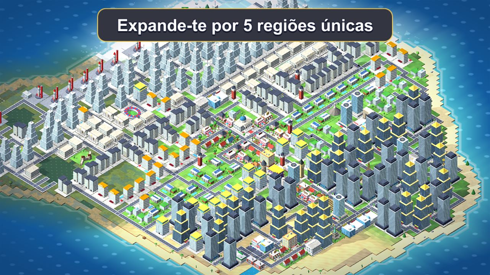

Tens saudades dos construtores de cidades clássicos? Conhece o Money City
Por volta de 2010, milhões de pessoas jogavam construtores de cidades sociais no Facebook, como Millionaire City, CityVille e SimCity Social. Construías uma vila, recolhias moedas das tuas casas, expandias o teu terreno e decoravas cada recanto. Muitos desses jogos já não estão disponíveis, mas é fácil lembrar a sensação que davam. O Money City é um jogo novo e original, feito para quem tem saudades desse estilo de jogo.
Construção simples, um momento de satisfação sempre que recolhias dinheiro e uma cidade que crescia aos poucos, de meia dúzia de casas até um horizonte de arranha-céus. Podias jogar dois minutos ou uma noite inteira, e havia sempre um motivo para voltar.
Como o Money City traz isso de volta
O Money City é um jogo acolhedor de construção de cidades e magnata para Android. Constróis casas, assinas contratos de arrendamento de 1 minuto a 3 dias, recolhes a renda com um toque e transformas uma pequena aldeia numa megacidade. Compras novos terrenos numa ilha com cinco regiões, melhoras edifícios até 5 estrelas, decoras com parques e estátuas e constróis 10 maravilhas do mundo que aumentam os teus rendimentos.
O que é diferente hoje
O Money City é para um jogador e funciona offline. Não precisas de conta do Facebook, de amigos a quem enviar pedidos nem de ligação à internet. Os anúncios são opcionais: só vês um quando queres um bónus. O jogo está disponível em 12 idiomas e abre no idioma do teu telemóvel.
Assina contratos, recebe rendasConstrói 10 maravilhas do mundo

Expande-te por 5 regiões únicas
Perguntas frequentes
O Money City tem relação com Millionaire City, CityVille ou SimCity Social?
Não. O Money City é um jogo original criado por um programador independente. Não é afiliado, apoiado nem associado a esses jogos ou aos seus proprietários.
O Money City é parecido com os construtores de cidades clássicos do Facebook?
Partilha a mesma ideia relaxante de construir uma cidade e recolher rendas dos teus edifícios, com funcionalidades móveis modernas como jogo offline, contratos de arrendamento, cinco regiões e maravilhas do mundo.
Preciso do Facebook ou de amigos para jogar Money City?
Não. O Money City é um jogo para um jogador. Podes jogar sozinho e offline.
Onde posso jogar Money City?
O Money City está disponível para Android no Google Play.
Millionaire City, CityVille e SimCity Social são marcas comerciais dos respetivos proprietários. São mencionadas apenas para descrever um estilo de jogo. O Money City não é afiliado a estes jogos ou aos seus proprietários, nem é apoiado por eles.